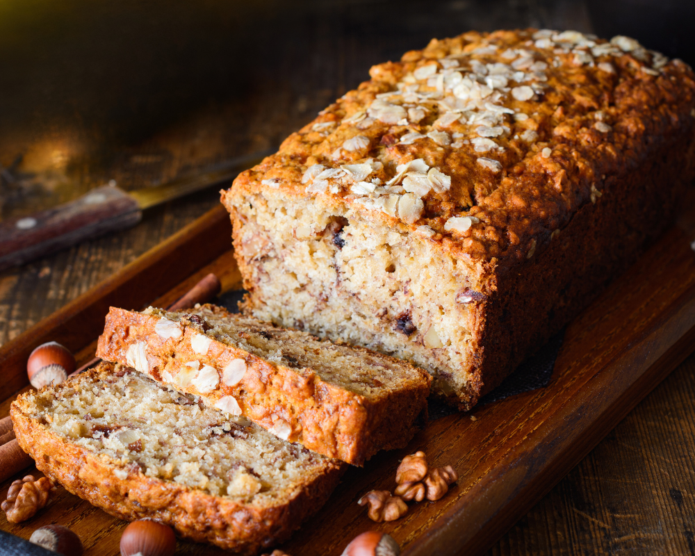

Max's Zucchini Bread
This is my own personal recipe that I created from inspiration of many others but there was always something missing. I had a huge supply of zucchini from the garden and was desperate for a solution. I pieced together this recipe and gave away tons of bread to all my neighbors. They loved it so much and begged for the recipe. One neighbor in particular asked for it every time we crossed paths. But since I'd never written it down, it was such an undertaking that I never got around to it. One day, I learned that neighbor had passed away from cancer and I'd never get the chance to give her the recipe. So I finally sat down and pieced it together all over again and am now commited to giving it away to as many people as possible.
Prep Time: 20 minutes
Cook Time: 40-60 minutes
Yeild: 2 loaves
Ingredients
Bread
- 3 cups all-purpose flour
- 1 teaspoon salt
- 1 teaspoon baking soda
- 1 teaspoon baking powder
- 3 teaspoons cinnamon
- 3 eggs
- 1 cup oil
- 1 1/4 cup sugar
- 1 cup brown sugar
- 3 teaspoons vanilla
- 2 cups grated zucchini
- Zest of 1 lemon
Crumb Topping
- 1/2 cup oats
- 1/2 cup brown sugar
- 1/4 flour
- 1/4 teaspoon cinnamon
- 1/4 cup melted butter
Directions
- Grease and flour--or line with parchment paper--two 8x4 loaf pans. Preheat oven to 325°F.
- Sift flour, salt, baking powder, baking soda, and cinnamon together in medium bowl.
- Beat eggs, oil, vanilla, white sugar, and brown sugar together in large bowl. Add sifted ingredients to creamed egg mixture, beat well. Stir in zucchini and lemon zest until well combined.
- Prepare topping. Mix brown sugar, flour, and cinnamon. Stir in oats, then melted butter. Set aside.
- Bake for 40 to 60 minutes or until knife comes out clean. In the last 15-20 minutes of baking, add topping.